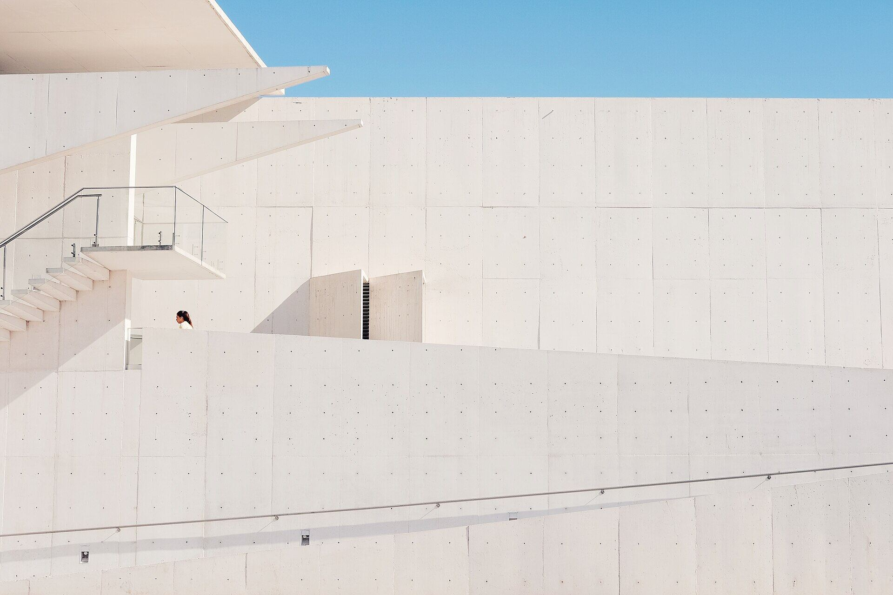
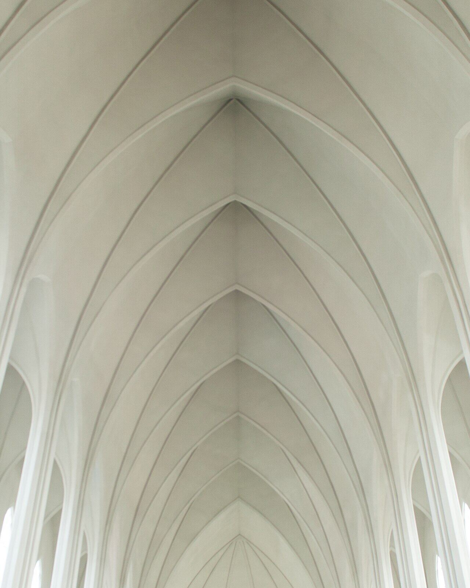
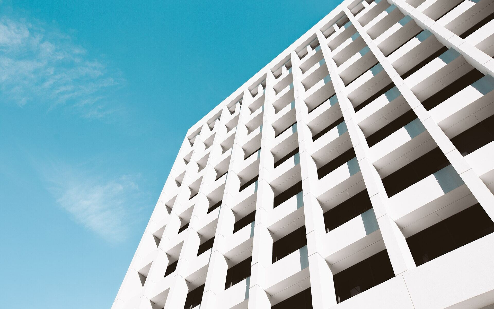
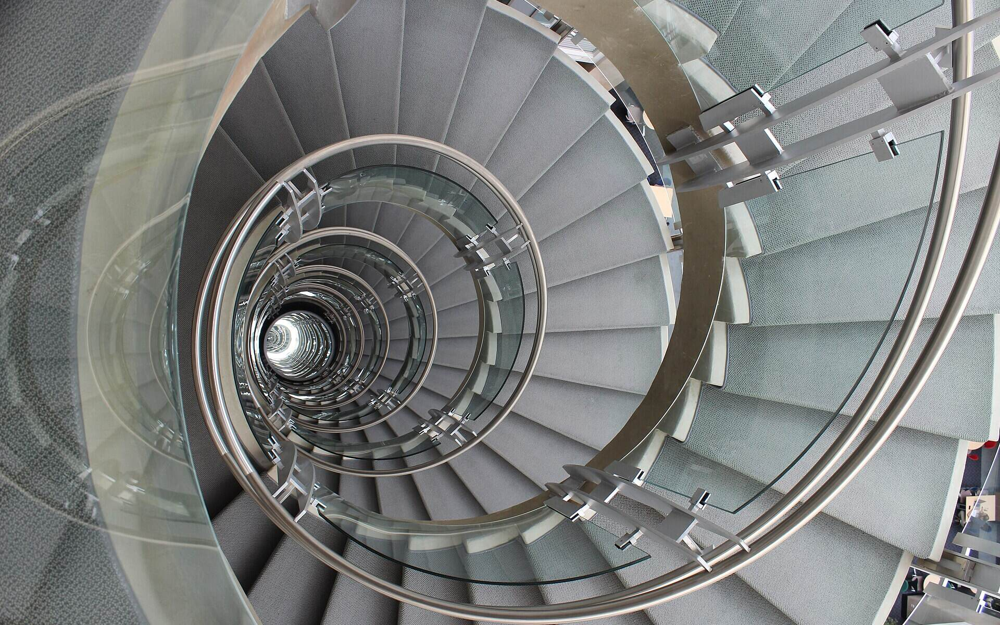
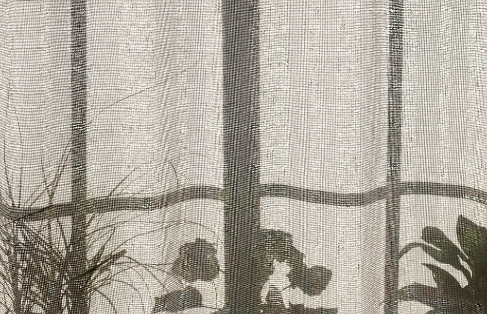
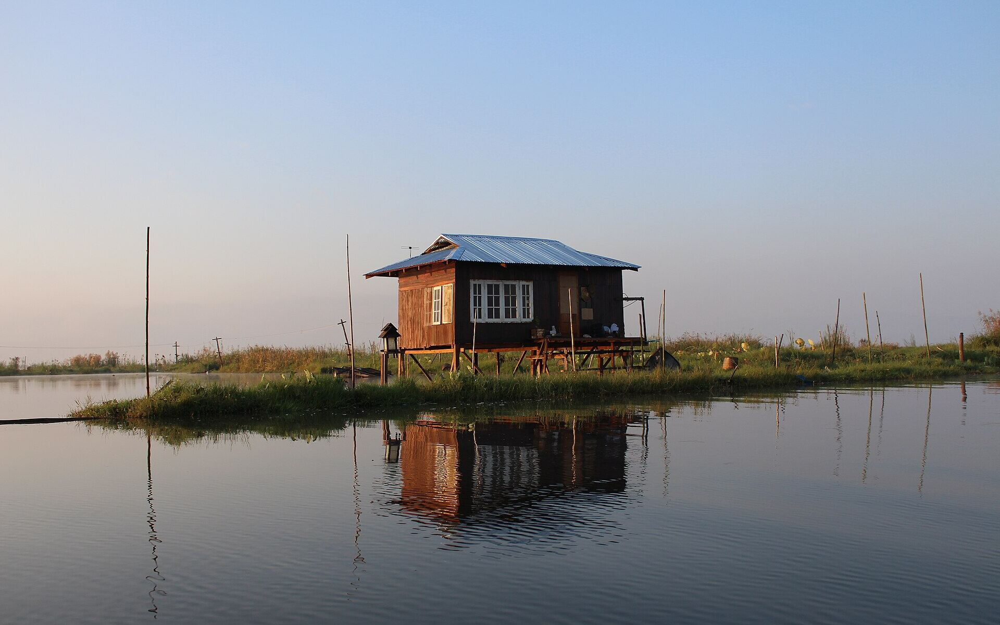
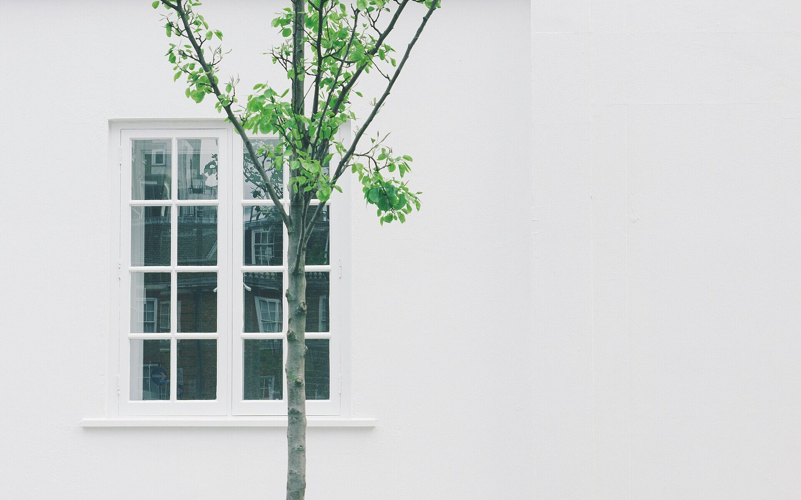
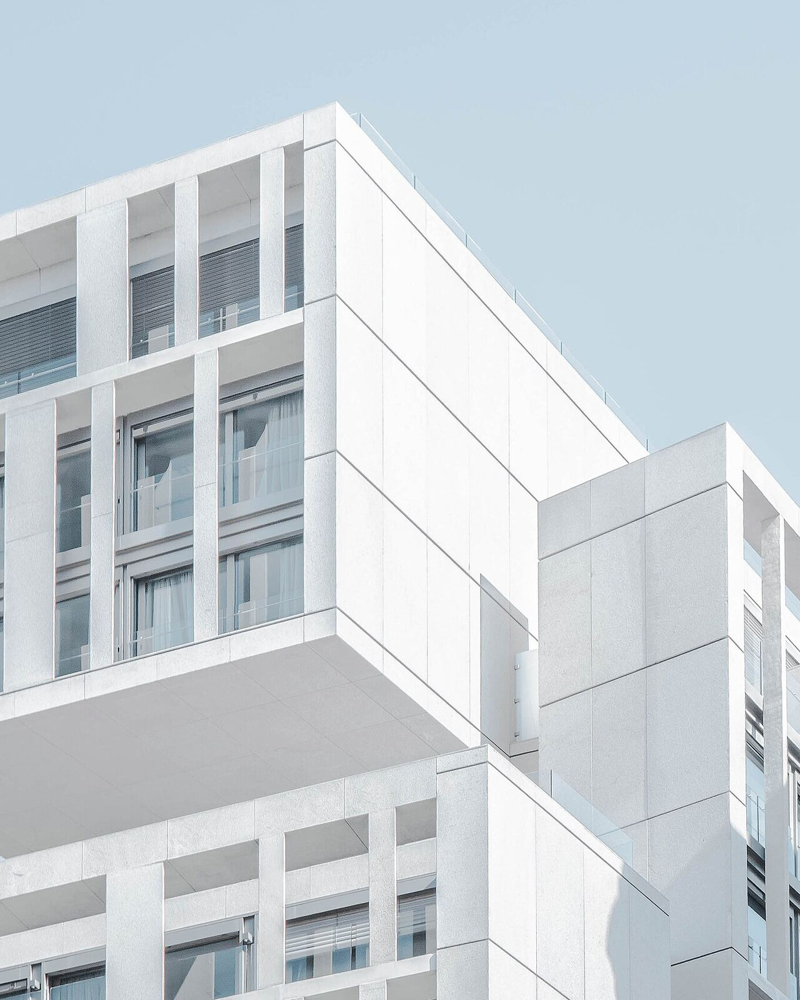
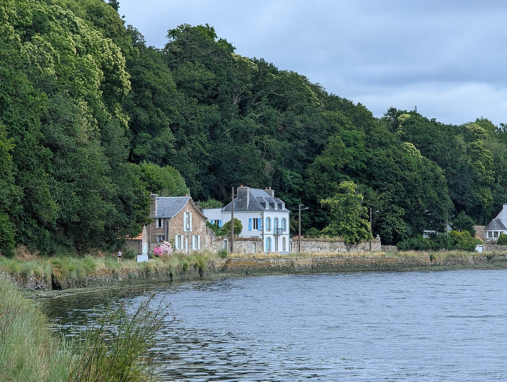
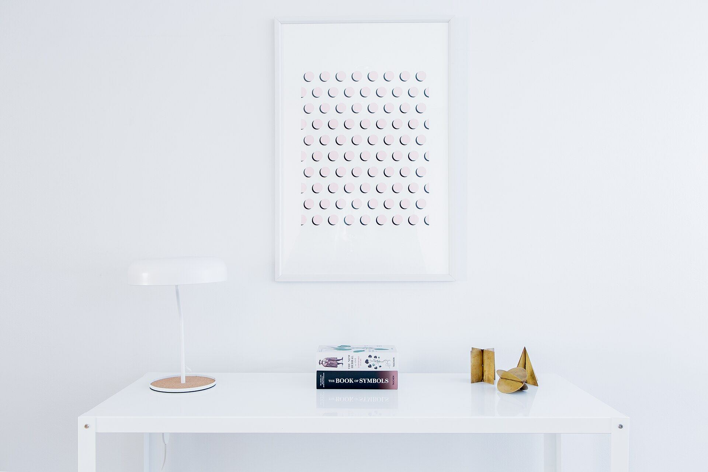

Two directions for the reworked Harbour template, drawn with the ten public-domain photos picked for it and Harbour's own colours and fonts. Both use only blocks Crust has today: Section with a background photo and tint, Columns with uneven widths, Headings as text-only bands, and rich-text links. Photo veils are drawn at the exact strength Crust applies, so text contrast here is what will publish.
Light opening: the white terraces under Harbour's paper veil (Crust's "Light" tint, 55%), dark serif headline at the bottom left. Everything stays on paper and sand; the only dark band is the contact strip at the end.

Houses, studios and public rooms, designed to stay calm for decades.
See the workWe take on a few projects a year, and see each one through from the first sketch to the last fitting.



One line on this service and who it's for.
More on architectureOne line on this service and who it's for.
More on interiorsOne line on this service and who it's for.
More on landscape
We're hiring: one line about the role. Join us
A line about the projects below: who they were for and what they share.
Every project starts with a walk around the site.



Darker and more atmospheric: the river houses under Crust's "Medium" dark veil (65%), white headline centred, full-screen opening. The statement band is deep green, and the work mosaic is mirrored (two wide, then tall).

Houses, studios and public rooms, designed to stay calm for decades.
See the workWe take on a few projects a year, and see each one through from the first sketch to the last fitting.
One line on this service and who it's for.
More on architectureOne line on this service and who it's for.
More on interiorsOne line on this service and who it's for.
More on landscapeA line about the projects below.

All from Wikimedia Commons, where each file's licence is checked by Commons reviewers. Five were first published on Unsplash before June 2017, when Unsplash photos were released as CC0; that dedication can't be withdrawn, so these copies are free to resell inside a template. Today's Unsplash and Pexels licences are not CC0 and are not used. Sizes: at most 1920 px, about 2 MB for all ten in the template file. StockSnap, Flickr, rawpixel and Pexels are blocked by this session's network, so they weren't searched.